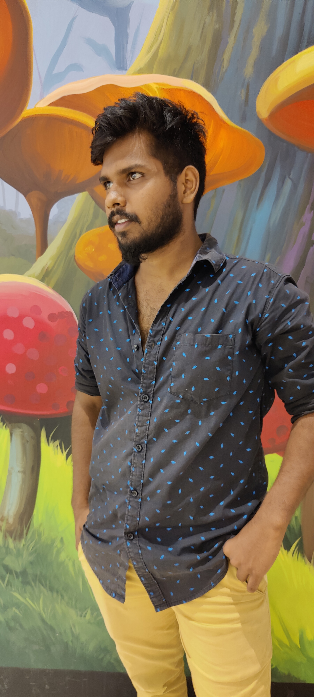

Wikipedia is a free online encyclopedia created and edited by volunteers around the world and hosted by the Wikimedia Foundation. Wikipedia The Free Encyclopedia English 6 383 000+ articles
Virat Kohli (Hindi pronunciation: [ʋɪˈɾɑːʈ ˈkoːɦli] (listen); born 5 November 1988) is an Indian international cricketer and the former captain of the Indian national cricket team. Widely regarded as one of the greatest batsmen in the history of the sport,[4] he plays for Royal Challengers Bangalore in the IPL and Delhi in domestic cricket. Kohli holds numerous records in his career which includes scoring most runs in T20 internationals and IPL, fastest to reach 10,000 ODI runs. In 2020, the International Cricket Council named him the male cricketer of the decade. Kohli has also contributed to India's successes, including winning the 2011 World Cup and the 2013 Champions trophy. He is among the only four Indian cricketers who has played 500 matches for India
virat kohli 